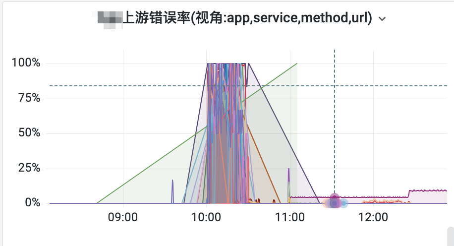
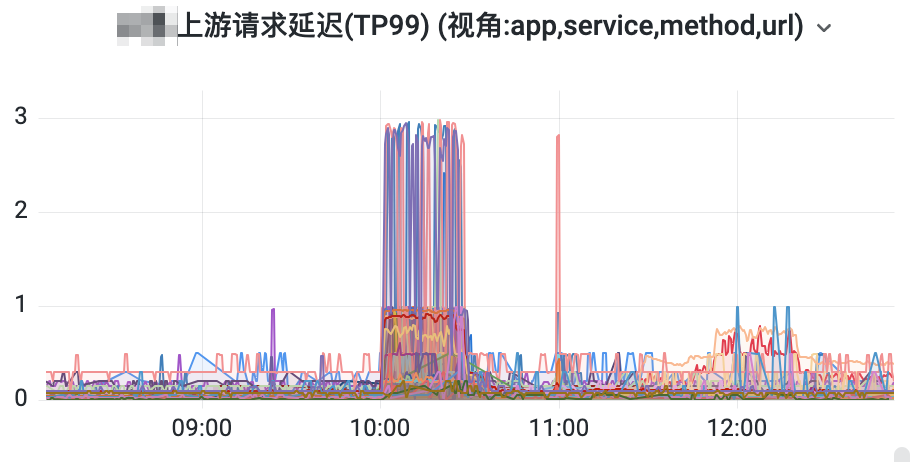
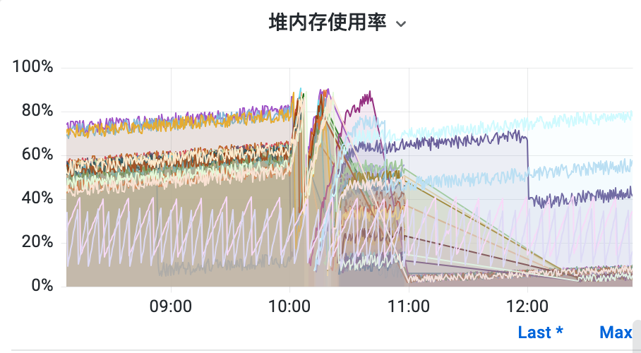
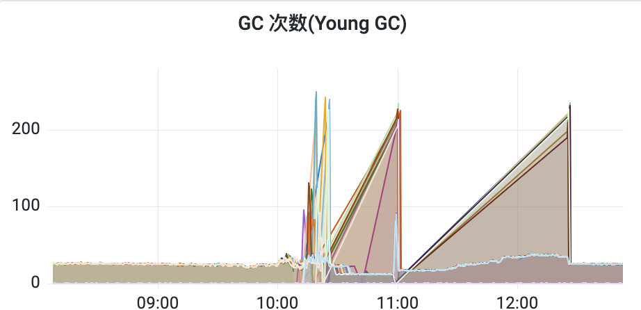
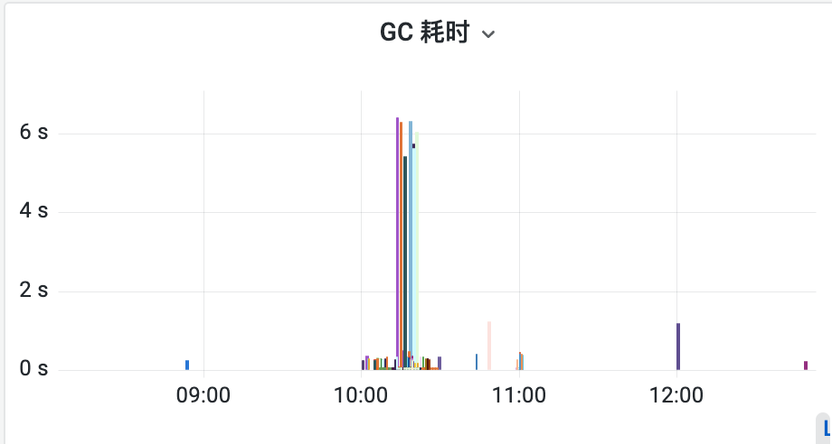
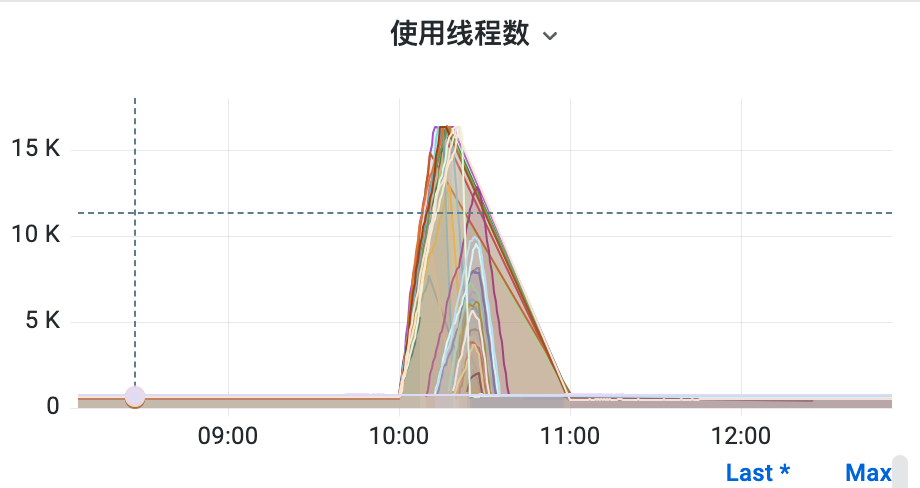

浅说线上故障
引言
作为一个开发者，bug 总是不可避免的，无论你对待你的 code 多么的“谨小慎微、如履薄冰”。常在河边走，哪有不湿鞋。你的上下游、环境、你的同事、和各种的“意想不到”的情况，这些情况包括但不限于：信息不同步、沟通不到位、逻辑不清楚和 API 不熟悉等等等等都会产生线上问题。
但是 bug 产生的原因大多还是因为自身的的原因，外界的原因还是比较少的，主要可以归结为：
- “莽”：历史逻辑或者需求没梳理清楚就开撸代码，写的差不多了感觉好像有点不对劲儿，不得不返工重新干，往往要耽误排期，或者熬夜加班，最后紧赶慢赶上线，上线后“炸锅”。
- “懒”：譬如，“
for循环调用也能实现，就这吧”。上线后傻眼了，自测数据比线上数据少的多。 - “顾头不顾尾”：修了这个问题，解决处理了这个 issue，导致其他业务不可用了。
- “想当然”：“这么简单怎么会出问题呢？就加一个
if判断”，上线后就是出问题了。 - “不自测”：全靠测试去兜底，自己根本不测试。
常见的问题分类
笔者把线上问题分为 2 大类：
- 影响服务性能的 bug：譬如上线服务 CPU、内存、Load、磁盘、IOPS、带宽激增，频繁 OOM、FullGC 等情况
- 影响业务的的问题：影响收益，影响用户体验等等
通常而言第一个问题可能更加严重，因为可能导致其他服务或者接口都无法提供服务。当然第二个也影响不小，如果是特别核心的接口：支付、购买、退款等等涉及“钱”的服务，那样客诉就会向“海啸”一样汹涌。
线上问题出现了该怎么办？
接上面的问题分类，笔者最近在做需求的时候也“有幸”两种问题都遇到了。这里即是记录也是分享自己遇到问题的时候的解决思路和方法吧。
目的是在经历的故障中总结经验，在今后碰到相同的问题或者其他线上问题的时候，能够冷静处理，不慌不乱地应对。
经验才是最大的财富啊。
性能问题
笔者目前从事的是营销业务，这是背景。
时间线
[开始报警] 某日 10 点，钉钉群里突然开始报警，大量接口开始超时，直接超时率从 70% 飙到 100%，瞬时间报警数加上下游询问的人钉钉消息直接到了 99+。 报警等级也开始上升，逐渐到上升到了 L0 报警群中，不一会儿上下游的人都来问怎么回事。
[排查原因] 开始看报警, 看到所有的接口错误率、TP99、错误数基本都“笔直”的冲上去了。但都是从同一个时间点 10 点开始报错，JVM 也异常。
|  |  |
|---|---|
|  |  |
|  |  |
[开始止损] 开始让运维重启机器。联想到最近交付了某个需求，前一天晚上得知今天 10 点开始投放，确定是新交付需求的导致的。同事 A 开始配置该业务最大 QPS 的接口限流阈值，调到最低（这是有预案的）,但是配置后异常指标均没有下降的趋势。后不得不让打电话让运营手动把活动下线，同时 leader 让运维同时扩容。 后接口逐渐恢复。
[故障恢复] 接口从报警到恢复持续了约 40 多分钟，但是体感时间比这个要长的多。
分析原因
- 活动 10 点开始投放，活动同时上线 14 个，活动开始大量的请求同时进入服务。当用户没有参与活动的时候，需要判断每一个活动能否参与，然后选按照某种规则进行参与。当参与后就不会每个都判断。
- 判断用户能否参与就是把用户和每个活动都传入
java.util.concurrent.CompletableFuture#supplyAsync(java.util.function.Supplier<U>, java.util.concurrent.Executor)这个方法中，进行处理，相当于把流量进行了放大。如果入口 QPS 有 1K，那么入口 QPS乘以活动个数就是整个服务要处理的请求，在这个 case 中是成了 14K。 - 然后导致了 JVM 堆的利用率激增，GC 次数增加，GC 耗时增加。最后拖垮了整个服务。
- 最后最高的那波流量过去，用户已经参与完成，且机器进行了扩容，内存增多，因此后续恢复。
为什么限流没有生效？
上线之前有预案：有开关控制接口的 QPS，但是同事 A 在配置中心配置 key 的时候，key 配置少了前缀，导致未能使得限流起作用，最后不得不打电话让运营下线活动才缓解。
有问题直接重启服务对吗？
理论上不对，不明确原因的情况下就盲目重启服务，可能不会导致情况的解决，甚至导致故障的加剧，比如丢失内存的数据等情况，这个故障中如果不扩容估计也不会解决。这一点是值得反思和思考的。
如果不优化代码后续会有这种情况出现吗？
理论上会，因为代码相当于将流量扩大，机器的数量可能远小于活动的数量。下一波同时大量上线活动的时候可能还是一次挑战。
如何避免这种性能问题?
这种非业务性的 bug，测试往往在流量很低的测试缓解无法测到。性能问题主要还是得靠压测。
压测过程中主要关注的指标：
- 会不会出现有限资源被耗尽的情况
- 内存（in this case:JVM 堆内存）
- 带宽（一般 Redis 容易被大 key 打满）
- 资源类
- 链接池
- 线程池
- 存储类
- 看看有没有并发问题(尤其是并发写)
- 锁和同步
- 存储的性能
- 主从同步问题
压测的时候模拟线上的情况，观察相关的指标，从而避免的性能问题。前提是需要良好的基础组件的支撑。
笔者觉得还有一个可以优化的地方：业务按照级别拆分服务
本次的故障因为 JVM 问题所有的接口无法提供服务，影响了一些核心链路，比如购买卡券之类的活动，导致上下游也跟着报警，但是本次的业务并不是十分核心的业务。
如果把核心的业务拎出来一个服务进行维护，次核心的业务为一个服务，不重要的但是量大的业务拆分成一个服务。可能一个业务的问题就会减少对其他业务的影响。
下次碰到这种性能问题的处理方式或者 SOP 是什么？
如何避免出现问题
to be continued….